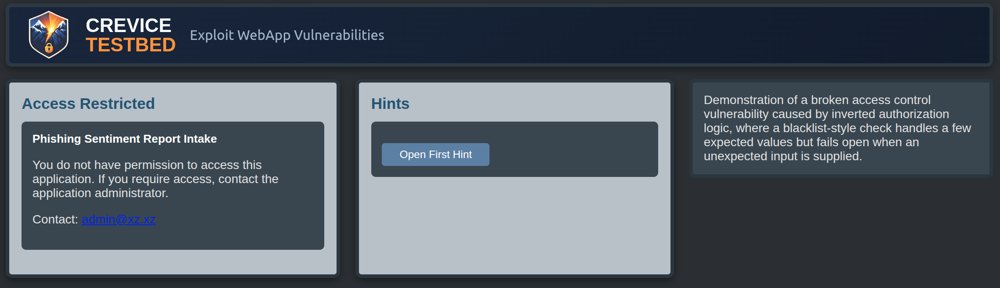
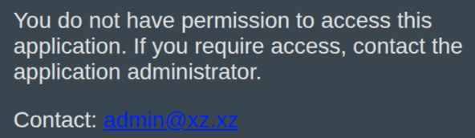
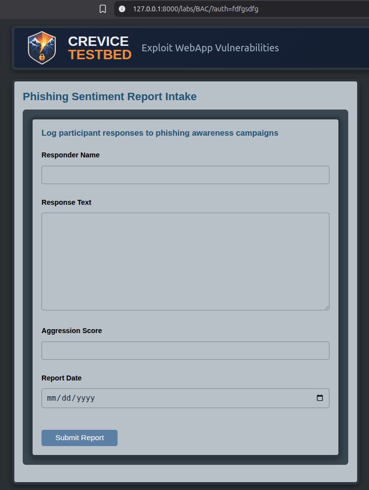

Broken Access ControlInverted Authorization Logic and Fail-Open Input Handling

Summary
This lab demonstrates a Broken Access Control flaw caused by inverted authorization logic and a fail-open design tied to a user controllable URL parameter. The application has already performed a server-side authorization check and determined that the user should not have access, but instead of enforcing that decision directly, it passes control to a second layer of logic that relies on a URL parameter to decide what the user should see.
That secondary logic handles a few expected values safely, but anything unexpected falls through to the protected application. The result is a simple access control failure: the application correctly decides the user is unauthorized, then quietly talks itself out of it.
Lab Objectives
- Identify authorization logic that relies on user controllable input
- Recognize how inverted or blacklist-style checks can fail open
- Understand why access decisions must be enforced server-side
- Observe how unexpected input can bypass logic that only handles expected cases
The vulnerability is easy to trigger. The bypass doesn’t require browser wizardry or a proxy, but the root cause deserves consideration. It asks the tester to stay curious from a fully unauthorized perspective. I originally found this issue while waiting for access during an assessment. The team was still working through permissions, so I started testing the access denied page and noticed that the auth parameter was user controllable. That was enough to turn a “please wait while we fix your access” moment into a useful finding.
The important lesson is not that an unexpected auth value reaches the application. It’s that the application had already decided the user was unauthorized, then handed control to a second layer of flawed logic built around a user-controllable parameter. Understanding that design failure is the point of the lab.
Technical Walkthrough
In this lab, the user is not supposed to be able to access the application. The application performs a server-side check first and determines that the user is unauthorized. So far, so good.
Instead of directly returning an access denied response and ending the request, the application makes a strange design choice: it uses a URL parameter named auth to decide whether to display the denial message or the application itself.
The problem is that the logic responsible for handling the auth parameter is inverted and incomplete. Instead of positively enforcing access, it attempts to block a few known bad states. That approach works right up until it doesn't.

First, inspect the URL and identify the auth parameter.
Next test expected values such as false, true, and empty input
auth=falsereturns the access denied messageauth=truealso returns the access denied messageauth=an empty value also returns the access denied message
At a glance, that may look defensive. It isn't. It's just narrowly defensive. The code accounts for a few expected values and assumes that covers the problem.
When the user supplies any other value, such as:
auth=anyOtherString
the request falls through the conditional logic and loads the protected application.
- Modify the parameter to an unexpected value and observe the change in behavior
- Confirm that access is granted without any meaningful secondary authorization enforcement

The protected functionality itself is a small phishing sentiment tracking application where a user can enter campaign response messages and score them from
0 to 3, with 0 representing a kind response and 3 representing an overtly aggressive one.
The sentiment tracker is unimportant. More importantly, no additional meaningful server-side authorization check prevents access once the request reaches this page. If there is another check later in the flow, it's built on the same flawed fall-through pattern.
Why the Logic Fails
The root problem is that the application already knows the user is unauthorized, but it doesn't enforce that decision directly. Instead, it translates that result into a user visible and user controllable parameter, then trusts follow-on logic to interpret it correctly. That's where things go sideways.
A more secure approach would look something like this:
if (isAuthorized === true) {
return theAdminPage;
} else {
return accessNotAuthorized;
}That logic is explicit, positive, and final. If the user isn't authorized, the request ends there.
The flawed design in this lab behaves more like this:
if (isAuthorized === false) {
return "auth=false";
}
if (auth === "false") {
return accessNotAuthorized;
} else if (auth === "true") {
return accessNotAuthorized;
} else if (auth === "") {
return accessNotAuthorized;
}
// anything else falls through
return theAdminPage;There are a few problems packed into this pattern.
- The original authorization decision isn't treated as final
- A user controllable parameter becomes part of the access decision
- The logic is blacklist-style and only blocks a few expected values
- Unexpected input is not denied by default and instead results in access
This is why fail-open authorization logic is dangerous, especially when it's built around blacklisting expected values. The code doesn't need to explicitly grant access. It only needs to miss one unexpected state and allow the request to fall through.
This was the work of someone who knew an authorization check was needed, but didn't fully understand how to carry that decision through the rest of the application securely. Unfortunately, access control is one of the worst places to be almost right.
The lesson here isn't just that the parameter can be manipulated. It's that the application should never have delegated access control logic to that parameter in the first place.
Key Takeaways
- Authorization decisions should be enforced server-side and treated as final
- User controllable input should never determine whether protected functionality is exposed
- Blacklist-style checks are brittle because they only handle anticipated cases
- Unexpected input should be denied by default, not allowed to fall through
- A correct authorization result can still lead to compromise if later logic reinterprets it unsafely
A Lesson for Developers
A common mistake is thinking that handling a few known values is equivalent to enforcing security. It isn't. Security logic has to be correct for unexpected input too, because unexpected input is where attackers live.
In this case, the developer safely handled several obvious parameter states and still produced a Broken Access Control vulnerability because the design denied only what was anticipated rather than allowing only what was explicitly authorized.
Side Note
Although it's not the main point of this lab, the application's Admin functionality feeds data into report behavior used elsewhere in Crevice Testbed. One related lab includes a vulnerable sink that renders one piece of stored input without proper output encoding. The combined behaviors result in stored XSS.
That means this Broken Access Control issue doesn't just expose an administrative-style workflow. In a broader application context, it can also become a stepping stone to client-side code execution when attacker controlled data entered here is later rendered unsafely in downstream functionality.